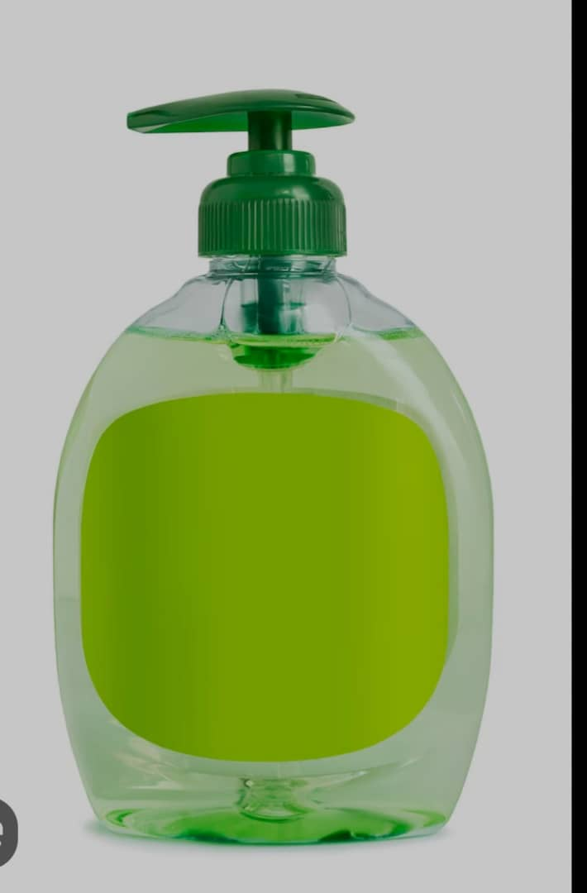

Découvrez mes projets et réalisations personnelles
La fabrication du savon en liquide neccesite des ingrédients de base
Ingrédients : huile végétale, hydroxyde de sodium,eau, parfum, colorant(facultatif
Équipements : un grand pot en plastique, un thermomètre,un moule pour le savon, etc.
procédé : préparation de l'hydroxyde de sodium, préparation de l'huile, mélange des deux composés, saponification,ajout de l'eau,melange et refroidissement, ajout de parfum, coloration,mise en bouteille
Ingrédients : vinaigre, oeufs,huile, sel
équipements : bol et fouet ou mixeur
processus : préparation des jaunes d'œufs, ajout de l'huile, continuer à fouetter jusqu'à ce que la mayonnaise commence à epaisir et à prendre une forme crémeuse, ajout du vinaigre et mélanger
conseils : utiliser les oeufs frais et de bonnes qualités, ne pas verser trop d'huile